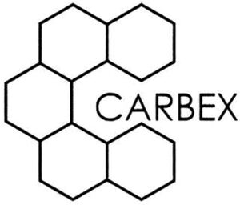

Trade Mark Journal No.2025/040 3 October 2025
WO0000001875903 (7,9,37,42)
Office of origin: European Union Intellectual Property Office (EUIPO)
Date of International Registration:25 July 2025
Date of designation in the UK:
25 July 2025

International priority date claimed: 17 February 2025
(European Union Intellectual Property Office (EUIPO))
(019143553)
- Class 7
- Machine tools; motors and engines (except for land vehicles); machine coupling and transmission components (except for land vehicles); electric brushes and holders therefor; carbon brushes, silver-graphite brushes, bakelite-graphite brushes, electrographite brushes, hard-carbon graphite brushes, copper-graphite brushes, natural-graphite brushes, all the aforesaid for use in motors, engines and generators; ignition magnetos for engines; temperature sensors for engine coils [parts of machines/engines]; slip rings [parts of machines/engines]; thermistors [parts of machines/engines]; brush holders for electric brushes, carbon brushes, silver-graphite brushes, bakelite-graphite brushes, electrographite brushes, hard-carbon graphite brushes, copper-graphite brushes, natural-graphite brushes, all the aforesaid for use in electric and electronic machines, apparatus and instruments.
- Class 9
- Weighing, measuring, signalling, checking (supervision) apparatus and instruments; apparatus and instruments for conducting, switching, transforming, transmitting, accumulating, regulating or controlling electricity and electric, acoustic and optical signals; brush holders for electric brushes, carbon brushes, silver-graphite brushes, bakelite-graphite brushes, electrographite brushes, hard-carbon graphite brushes, copper-graphite brushes, natural-graphite brushes, all the aforesaid for use for electric and electronic apparatus and instruments for signalling, conducting, conducting, switching, transforming, accumulating, regulating or controlling electricity; carbon brushes, graphite brushes and silver-graphite brushes for signal transmission and the transmission of current; socket cables; magnets; connectors [electricity]; electrical components included in this class; carbon brushes, silver-graphite brushes, bakelite-graphite brushes, electrographite brushes, hard-carbon graphite brushes, copper-graphite brushes, natural-graphite brushes, all the aforesaid for use in transformers [electricity]; thermistors [parts of transformers [electricity]]; downloadable software and computer programs.
- Class 37
- Installation and repair or maintenance of slip-ring kits; installation, maintenance and repair of dust-extraction machines and graphite-dust extraction systems; repair and refurbishment of existing collector systems; installation of refurbished and repaired existing collector systems.
- Class 42
- Scientific and technological services and research and design relating thereto; web hosting; software as a service [SaaS]; platform as a service [PaaS]; rental of computer software; application service provider services; providing temporary use of non-downloadable software applications accessible via a web site; cloud computing for software for use in database management; cloud hosting for electronic databases; application service providers (ASPs) relating to software for use in database processing; platform as a service (PaaS) for computer software platforms for use in database processing; electronic data storage; electronic storage of electronic media, namely files, data, documents, text, videos and images.
AB Dynamoborstfabriken
Representative: AWA SWEDEN AB, Matrosgatan 1, SE-211 18 Malmö, SWEDEN